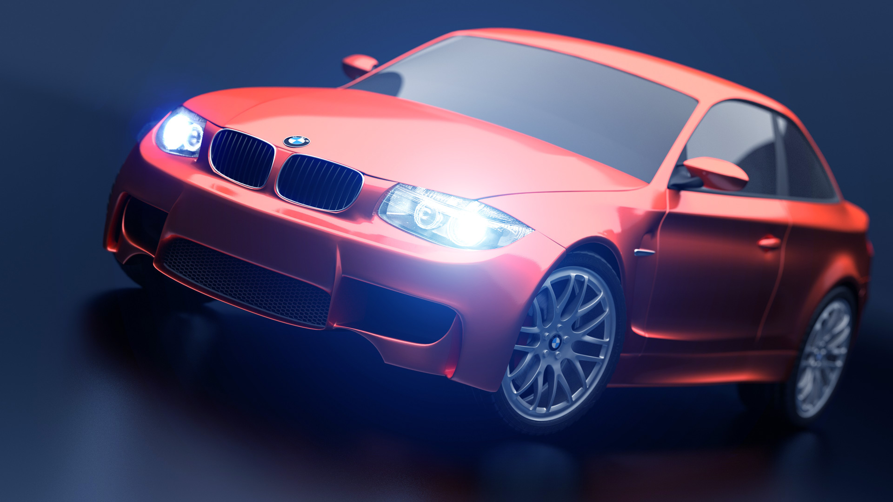
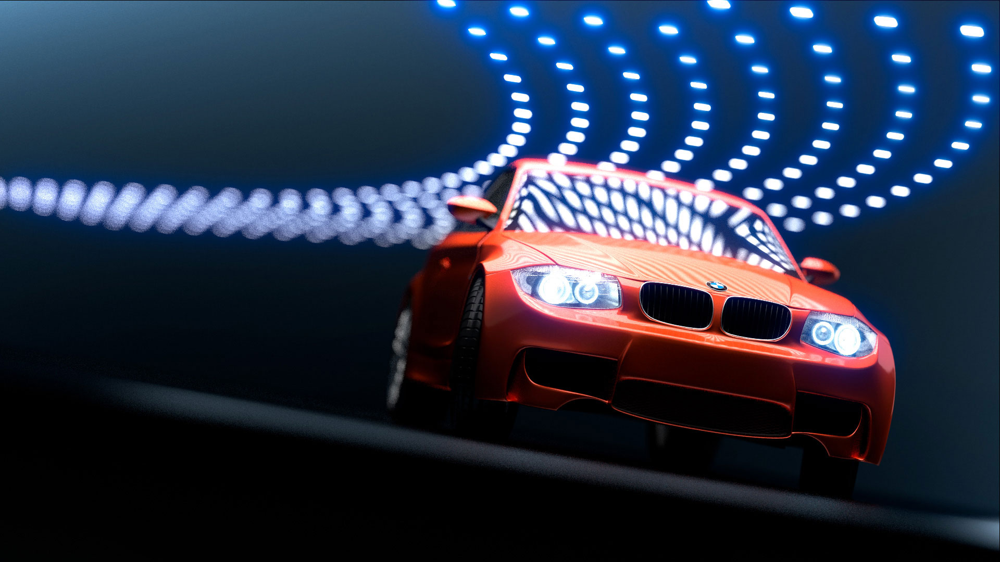
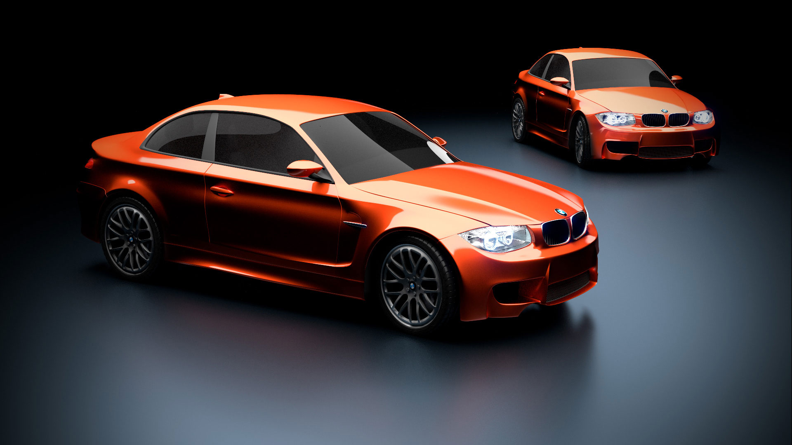
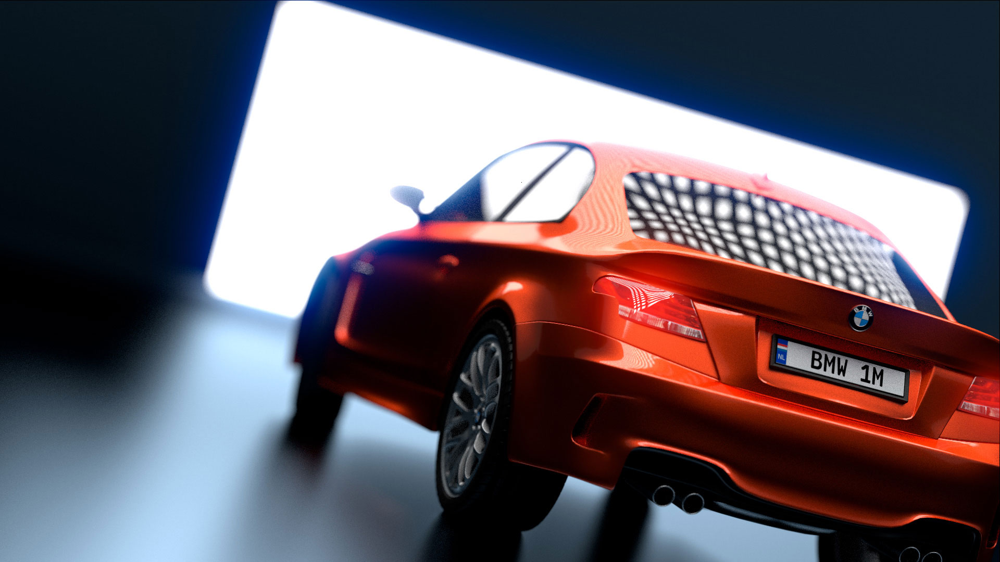

BMW 1 Series M
Modeling a sports car is part of every CG artist's rite of passage. It demands a mix of technical modelling skills and eyes for lighting and composition. When I started, instead of going with the usual picks of Italian marques, I decided on something that I am more passionate about: an 'old-school' BMW. It doesn't have the sleekness of Ferrari, nor the muscularity of Lamborghini, but the bullfrog-like 1-Series M has its own undeniable charm.
Getting good photo references took a while because the car was just released. The actual modelling process was pretty straight forward using subdivision surfaces. Because I was eager to get to the lighting and tinkering stage, I glossed over some of the finer details like brake calipers and gas cap. The interior of the car was equally plain, with just enough detail to look acceptable from the outside.
This was my first time really using the Cycles Renderer, the photorealistic pathtracer bundled with Blender. The ability to tweak materials, lights, and pretty much anything and see the fully rendered results instantaneously is mind-blowing.
Here a traditional studio setup is used to light the cars. A single large softbox overhead is used to light each of the car.
For the car paint material, I was able to duplicate the valencia orange with a clearcoat lacqure. But I wasn't able to duplicate the metalic flakes in the paint to my satisfaction. So for now, solid orange it is.
